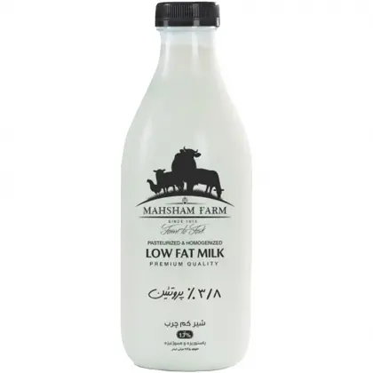

اینجا سوپرمارکت کد تمیز است. بهزودی باز میشود.
این اسم یعنی چه؟
Clean Code نام کتاب رابرت سی. مارتین (معروف به «عمو باب»، ۲۰۰۸) است. حرف اصلیاش این است که کد را آدمها بیشتر از کامپیوترها میخوانند: اسمهای گویا، تابعهای کوچک که فقط یک کار میکنند، و کامنت کمتر چون خود کد باید گویا باشد.

شیر کم چرب ماهشام
شیر کم چرب تازه مزرعه ماهشام ا لیتری
140000